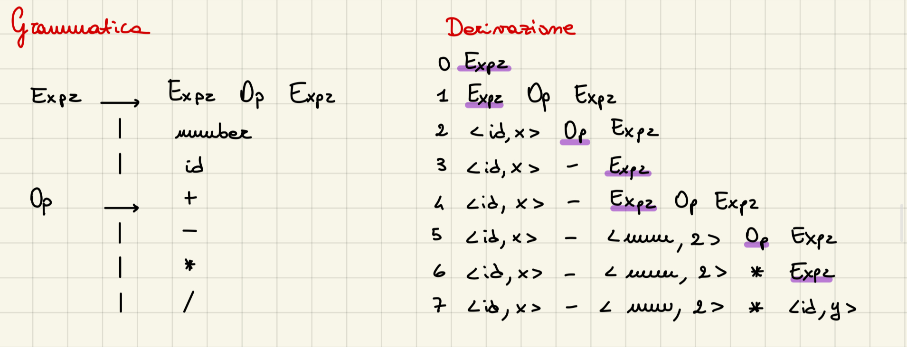
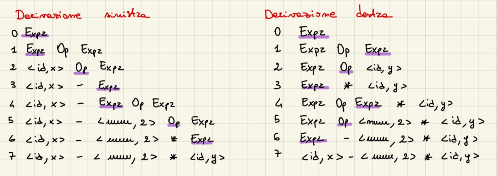
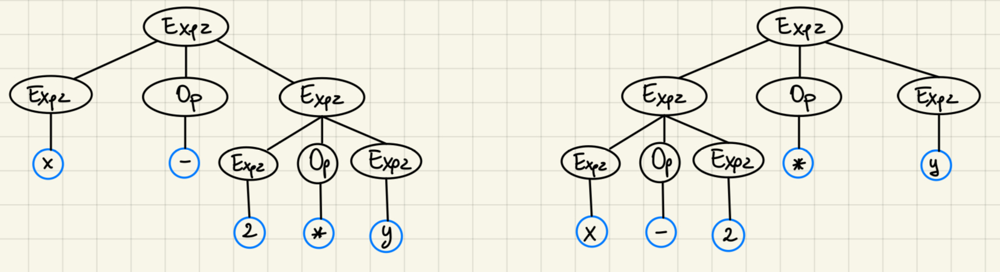
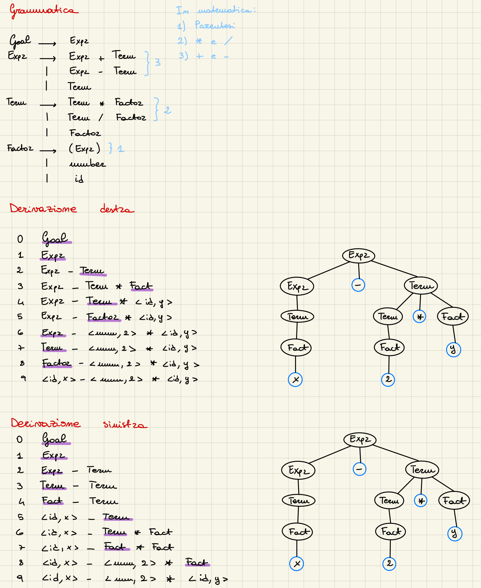

Parser
I compiti principali del parser, sono:
- Controlla la sequenza di parole e le loro parti del discorso per verficarne la correttezza grammaticale - riceve dallo scanner una sequenza di token con informazioni sulla loro categoria grammaticale e controlla che siano organizzate in una struttura grammaticalmente valida secondo le regole del linguaggio di programmazione.
- Determinare se l'input è sintatticamente corretto - verifica che il codice sorgente rispetti la sintassi prevista dal linguaggio
- Guidare il controllo a livelli più profondi rispetto alla sintassi - non si limita alla sola sintassi, ma può anche preparare il terreno per ulteriori controlli semantici, come verifiche di tipo o coerenza logica.
- Costruire una rappresentazione intermedia del codice (IR) - crea una struttura dati che rappresenta in modo strutturato il codice sorgente, spesso sotto forma di un albero sintattico astratto
Quando analizziamo un programma in un linguaggio, cerchiamo di trovare una derivazione, cioè una sequenza di passi che permetta di costruire quella frase partendo dalle regole del linguaggio. Per poter analizzare la struttura di un programma, abbiamo bisogno di una grammatica formale G che descriva le regole sintattiche del linguaggio, questo modello matematico definisce quali combinazioni di simboli sono valide. Di solito, per descrivere le grammatiche dei linguaggi di programmazione si usano quelle di tipo Context-Free (CFG - grammatiche libere dal contesto), poiché sono sufficientemente potenti per rappresentare la maggior parte delle strutture linguistiche. Una volta definita la grammatica G, abbiamo un linguaggio formale L(G) che include tutte le frasi che possono essere generate da G, dobbiamo quindi avere un algoritmo che ci permetta di verificare se una determinata sequenza di token appartiene a L(G).
Context-Free Grammar e Derivazioni
Una grammatica è una quadrupla G = (S, N, T, P) dove:
- S è lo start simbolo (simbolo iniziale da cui parte ogni derivazione - es. Expr)
- N è l'insieme dei simboli non terminali (variabili che rappresentano strutture più complesse che verranno riscritte/espanse secondo le regole)
- T è l'insieme dei simboli terminali (simboli finali concreti che compaiono nella stringa di output)
- P è l'insieme delle produzioni o delle regole riscritte (insieme delle regole che descrivono l'espansione/sostituzione dei simboli non terminali)
Perché non posso usare i linguaggi regolari e i DFA anche in questo caso? I linguaggi regolari sono quelli che possono essere descritti da espressioni regolari e possono essere riconosciuti da automi a stati finiti deterministici (DFA), codesti sono adatti a descrivere linguaggi con una struttura molto semplice, come sequenze ripetitive o pattern statici. I linguaggi di programmazione richiedono spesso strutture più complesse, come l'annidamento di parentesi, le strutture condizionali e i blocchi di codice, questi schemi richiedono una capacità di tenere traccia di contesti diversi, come aprire e chiudere parentesi o iniziare e terminare blocchi di codice, i linguaggi regolari non hanno questa capacità. La soluzione è dunque utilizzare grammatiche libere da contesto, che vengono gestite da automi più potenti, quelli a pila.
Una grammatica si definisce libera da contesto perché, ogni produzione ha la forma del tipo $A \rightarrow \alpha$ dove: A è un simbolo non terminale e $\alpha$ è una stringa di simboli terminali e\o non terminali, questa forma significa che ogni produzione può riscrivere il non terminale A indipendentemente dal contesto in cui A appare, può sempre essere sostituito da $\alpha$ in qualunque punto del derivato. In una grammatica sensibile al contesto (context-sensitive grammar), le regole di produzione possono invece dipendere dal contesto in cui il non terminale appare. Una regola di produzione sensibile al contesto ha una forma più generale: $\alpha A \beta \rightarrow \alpha \gamma \beta$, dove A è un simbolo non terminale, $\alpha$ e $\beta$ sono sequenze, anche vuote, di simboli terminali che rappresentano il contesto e $\gamma$ è una sequenza di terminale e\o non che sostituisce A in quel contesto specifico. In questo caso, A può essere riscritto in $\gamma$ solo se appare circondato dai simboli $\alpha$ e $\beta$, questo rende la grammatica dipendente dal contesto.
Vediamo un esempio: 
Analizzando la grammatica abbiamo che:
- Expr può essere espansa con:
- Expr Op Expr
- number
- id
- Op può essere espanso con:
-
-
- *
- / Analizzando la derivazione, espandendo ad ogni step i simboli non terminali evidenziati in viola con i possibili simboli concessi, arriviamo ad avere la stringa $x - 2 * y$. Notiamo a questo punto che la derivazione si può provare in due differenti modi:
-
- Leftmost derivation sostituendo il simbolo non terminale che si trova più a sinistra ad ogni step (esempio precedente).
- Rightmost derivation sostituendo il simbolo non terminale che si trova più a destra ad ogni step.

Il risultato è lo stesso, ma producono differenti alberi di parsing: 
L'ambiguità che ci suggerisce l'albero è: $x-(2*y)$ o $(x-2)*y$? La grammatica ha un problema, non abbiamo nessuna informazione sulla precedenza degli operatori o sull'ordine di valutazione, bisogna riscriverla correttamente. 
Vediamo che gli alberi di parsing sono identici e la soluzione finale è $x - (2*y)$.
Un ultimo problema di questa grammatica è che se abbiamo più di una possibilità di derivazione sia nel caso a sinistra che nel caso a destra per un singolo step, la grammatica è ambigua.
Ad esempio nello step 1 della prima [[grammatica-derivazione.jpeg|derivazione]], quello può essere espanso anche come Expr Op Expr, finendo in un loop infinito di espansione, NON lo vogliamo (soluzione nel prossimo [[#Top-Down Parsing - LL(1)|paragrafo]]).
Top-Down Parsing - LL(1)
Il Top-down parser è una delle tecniche che viene usata per fare parsing, il suo funzionamento consiste nell'analisi dal nodo radice dell'albero sintattico e procede verso le foglie, cercando di far corrispondere la sequenza di input alle regole della grammatica.
LL(1):
- Left-to-right: il parser legge l'input da sinistra a destra
- Leftmost derivation: costruisce l'albero sintattico espandendo sempre il simbolo non terminale più a sinistra
- (1): lookahead, cioè il parser guarda solo un simbolo (in questo caso) in anticipo per decidere quale regola applicare.
Quando si fa una scelta sbagliata nel fare match con la grammatica, il parser deve "backtrackare", cioè annullare la scelta della regola di produzione, e provare con un’altra regola per lo stesso simbolo. Il backtracking implica tornare al punto in cui il parser ha fatto una scelta, scegliere una produzione diversa e riprendere l’analisi da lì, questo processo è inefficiente e può portare a tempi di parsing esponenziali nel caso peggiore. Alcune grammatiche sono senza backtracking, il che significa che il parser può decidere quale regola di produzione usare basandosi solo sul simbolo corrente di input e (al massimo) su un simbolo di lookahead, eliminando quindi la necessità di backtracking. Le grammatiche LL(1) ne sono un esempio, perché strutturate in modo che ogni simbolo non terminale abbia una sola produzione possibile per ciascun token di lookahead. Questo le rende compatibili con i parser predittivi, che usano il lookahead per "predire" quale produzione applicare senza bisogno di fare tentativi e backtracking, per assicurarsi che non ci sia, di solito viene eliminata la ricorsione a sinistra nella grammatica e si rimuovono ambiguità.
Come accennato precedentemente la grammatica vista prima ha due probelmatiche:
- è ricorsiva a sinistra;
- troppe possibilità di fare match con diversi non-terminali per un unico non-terminale, dovendo dunque fare backtracking più volte;
Ricorsione a sinistra
Una grammatica è considerata ricorsiva a sinistra se $\exists , A \leftarrow \text{Non-Terminale}$ tale che $\exists$ una derivazione $A \Rightarrow^+ , A\alpha$, per qualche stringa $\alpha \in (\text{Non-Terminale} , \cup , \text{Terminale}^+)$ Dunque per eliminarla, dobbiamo trasformare la ricorsione a sinistra come una ricorsione a destra riscrivendo la grammatica. Ad esempio, consideriamo il pezzo di grammatica:
Fee -> Fee α
| β
//ricorsiva a sinistra
Possiamo riscriverla nel seguente modo:
Fee -> β Fie
Fie -> α Fie
| ε
//ricorsiva a destra
Vediamo che è la stessa identica grammatica trasformata in una ricorsione destra e con l'aggiunta del riferimento ad una stringa vuota $\varepsilon$. Aggiorniamo ora la nostra vecchia grammatica con ricorsione a sinistra:
Expr -> Term Expr'
Expr' -> + Term Expr'
| - Term Expr'
| ε
Term -> Factor Term'
Term' -> * Factor Term'
| / Factor Term'
| ε
Questa parte riscritta usa solamente la ricorsione a destra, quindi possiamo integrarla nella grammatica finale come segue:
Goal -> Expr
Expr -> Term Expr'
Expr' -> + Term Expr'
| - Term Expr'
| ε
Term -> Factor Term'
Term' -> * Factor Term'
| / Factor Term'
| ε
Factor -> (Expr)
| number
| id
Backtracking
Se sceglie la produzione sbagliata, un parser top-down potrebbe tornare indietro Un'alternativa è guardare avanti nell'input e usare il contesto per scegliere correttamente, questa metodologia del parser si chiama parsing predittivo.
Parsing Predittivo
L'idea di fondo è che avendo $A \rightarrow \alpha , | , \beta$ il parser dovrebbe essere in grado di scegliere tra $\alpha$ o $\beta$. Per fare questa scelta, il parser utilizza l’insieme FIRST di ogni espansione, cioè per una stringa $\alpha$ (che può essere composta da simboli terminali e non-terminali), l'insieme FIRST($\alpha$) è definito come l'insieme di tutti i token (simboli terminali) che possono comparire come primo simbolo in qualche stringa derivata da $\alpha$. $$x \in \text{FIRST}(\alpha) ; se ; \alpha \Rightarrow^+ x\gamma$$ dove:
- x è un simbolo terminale
- $\gamma$ è una seuqenza qualsiasi di simboli (terminali e non)
- $\Rightarrow^+$ indica una derivazione in zero o più passaggi
Esempio Supponiamo di avere le seguenti produzione per un non-terminale A: $$A \rightarrow aX ; | ; bX$$ dove:
- a e b sono simboli terminali.
- X e Y sono sequenze di simboli (terminali o non-terminali). Per costruire l'insieme FIRST per ciascuna produzione:
- FIRST(aX), dato che la stringa aX inizia con a, abbiamo: $$FIRST(aX) = {a}$$
- FIRST(bXY), dato che la stringa bY inizia con b, abbiamo: $$FIRST(bY) = {b}$$ Ora, l'insieme FIRST(A), che rappresenta i simboli terminali che possono iniziare una stringa derivata da A, è dato dall'unione degli insiemi FIRST delle sue espansioni: $$FIRST(A) = FIRST(aX) ; \cup ; FIRST(bY) = {a, b}$$ Attenzione, questo funziona solo se gli insiemi $FIRST(\alpha)$ e $FIRST(\beta)$ sono disgiuntivi: $$FIRST(\alpha) ; \cap ; FIRST(\beta) = \emptyset$$ Le ε-produzioni (produzioni che permettono a un non-terminale di derivare la stringa vuota) complicano la definizione di una grammatica LL(1). $$\text{FIRST}^+(A \rightarrow \alpha) = \begin{cases} \text{FIRST}(\alpha) ; \cup ; \text{FOLLOW}(A), & \text{se} ; \varepsilon \in \text{FIRST}(\alpha) \ \text{FIRST}(\alpha), & \text{altrimenti}\end{cases}$$
FOLLOW(A) è l'insieme dei simboli terminali che possono immediatamente seguire il simbolo non terminale A in una forma sentenziale.
Trasformazione di una grammatica non LL(1) in una LL(1)
Generalmente questa trasformazione non la si può fare, ma in alcuni casi si. Esiste una tecnica chiamata factoring della grammatica che riorganizza le produzioni per renderle più predittive. Consideriamo una grammatica G con le produzioni: $$A \rightarrow \alpha\beta_1 \quad \text{e} \quad A \rightarrow \alpha\beta_2$$ In questo caso, entrambe le produzioni di A iniziano con lo stesso prefisso $\alpha$, questo significa che quando il parser vede un simbolo iniziale corrispondente a $\alpha$, non può sapere quale delle due produzioni usare (se quella con $\beta_1$ o quella con $\beta_2$), poiché entrambe condividono $\alpha$. Questa ambiguità si traduce in una violazione della proprietà LL(1), poiché il parser non può decidere in modo univoco basandosi su un solo simbolo di lookahead, di conseguenza non stiamo rispettando la regola: $$\text{FIRST}^+(A \rightarrow\alpha\beta_1) ; \cap ; \text{FIRST}^+(A \rightarrow\alpha\beta_2) \neq \emptyset$$ Per risolvere questo problema, possiamo estrarre il prefisso comune $\alpha$ e creare una nuova produzione, rendendo la grammatica più adatta al parsing predittivo, questa tecnica si chiama factoring. Riscriviamo G:
- Creiamo un nuovo non terminale A' per gestire le varianti che seguono il prefisso comunque
- Riscriviamo le produzioni di A in modo che utilizzino A' dopo $\alpha$. $$A \rightarrow \alpha A'$$ $$A' \rightarrow \beta_1 \quad \text{e} \quad A' \rightarrow \beta_2$$
Bottom-Up Parsing - LR(1)
Rappresentano un approccio opposto rispetto ai parser top-down, mentre questi costruiscono l'albero di derivazione dall'alto verso il basso, i parser bottom-up partono dalle foglie (i simboli terminali) e cercano di risalire all'albero fino al nodo radice.
- Il parser inizia con la stringa di input, questi vengono "consumati" uno per uno, cercando di formare sequenze che possano corrispondere alle produzioni della grammatica.
- Man mano che l'input viene consumato, il parser aggiorna uno stato interno che rappresenta tutte le possibili produzioni o configurazioni della grammatica che potrebbero essere state applicate finora.
- Quando il parser riconosce una sequenza di simboli che corrisponde al lato destro di una produzione, applica una riduzione. Questo significa che sostituisce quella sequenza con il non-terminale corrispondente, riducendo la parte dell'albero che ha appena "costruito".
- Quando il parser inizia, è in uno stato che è valido per il primo simbolo dell'input, e da lì costruisce gradualmente l'albero.
Il parser bottom-up costruisce una derivazione di tipo rightmost.
Una riduzione in un parser bottom-up è il processo in cui una sequenza di simboli viene sostituita con il simbolo non-terminale sul lato sinistro della stessa produzione. Ad esempio, se abbiamo la produzione: $A \rightarrow \beta$ e il parser riconosce che una parte dell’input corrente corrisponde a $\beta$, sostituirà quella parte con A.

Nell'esempio sopra abbiamo sviluppato ridotto la stringa "abbcde" con la grammatica a fianco, i caratteri evidenziati in viola sono quelli che sono stati ridotti nel passo successivo. E' un rightmost reverse in quanto se partiamo nella derivazione dal goal e saliamo al passo 0 vediamo che i caratteri derivati sono quelli più a destra.
Nella gestione delle espressioni aritmetiche, si preferiscono le grammatiche ricorsive a sinistra, perché la valutazione segue solitamente una direzione da sinistra a destra, per facilitare questa valutazione in modo coerente, utilizziamo grammatiche ricorsive a sinistra, che riflettono meglio questa associatività a sinistra comune nelle operazioni come somma e sottrazione (per i bottom-up la ricorsione a sinistra non è un problema).
Shift-Reduce
Per implementare un parser bottom-up si utilizza il paradigma di shift-reduce, basandosi su una macchia a stati con uno stack. Questo modello ci sono quattro azioni principali:
- Shift: si sposta il prossimo simbolo dell’input sullo stack (Push).
- Reduce: si riconosce un handle (una sequenza che corrisponde al lato destro di una produzione) in cima allo stack e si riduce sostituendolo con il simbolo non-terminale relativo alla produzione (Pop + Push).
- Accept: Il parser ha analizzato tutto l’input e la stringa è accettata con successo.
- Error: Si riscontra un errore e il parser attiva una routine di gestione o recupero.
Il parser deve determinare dinamicamente quando applicare Shift e quando applicare Reduce: il parser continua a shiftare simboli dallo stack fino a formare un handle, quando un handle è in cima allo stack, è possibile applicare la Reduce. Il parser riconosce un handle utilizzando una tabella di parsing che specifica, per ogni stato e simbolo, se deve eseguire un'operazione di Shift o di Reduce, questa si basa sull'analisi della grammatica, determinando in quali condizioni è possibile applicare una certa produzione.
Vediamo l'esempio che abbiamo usato anche per il top-down, l'espressione $x-2*y$:

Ma come fare a riconoscere esattamente quando abbiamo un handle in cima allo stack? Invece di provare tutte le possibili derivazioni, possiamo fare riferimento a un insieme di informazioni pre-calcolate:
- Contesto a Sinistra: gli stati del parser contengono informazioni sul contesto a sinistra, cioè cosa è stato visto fino a quel punto nell’input, questo è memorizzato nella forma sentenziale parziale presente nello stack del parser.
- Stati del Parser: il parser mantiene informazioni aggiuntive attraverso uno stato, che rappresenta il contesto corrente del parsing e aiuta a determinare quando siamo pronti a effettuare una riduzione, questi stati vengono calcolati in anticipo attraverso un’analisi di raggiungibilità sulla grammatica, per capire quali sequenze di simboli possono portare a certi stati in un automa.
- Lookahead di un Simbolo: il parser guarda anche un simbolo in avanti (lookahead), cioè il simbolo successivo nell’input, che aiuta a determinare se il simbolo attuale può effettivamente essere l’inizio di un handle. Per implementare questo riconoscimento senza ambiguità, il parser utilizza un automa a stati finiti (DFA) che è stato progettato per riconoscere gli handle.
LR(1) vs LL(1)
Il contesto a sinistra permette al parser LR(1) (Left-to-right; Rightmost derivation reverse; lookahead) di distinguere situazioni che un parser LL(1) non sarebbe in grado di distinguere solo con il lookahead. Per esempio, in una grammatica ambigua o con ricorsione sinistra, il parser LR(1) può comunque prendere la decisione corretta basandosi sul contesto a sinistra, mentre il parser LL(1) non potrebbe
Bison
Bison è uno strumento utilizzato per generare analizzatori sintattici (o parser) basati su grammatiche specificate dall'utente, è comunemente impiegato in combinazione con Flex, che si occupa dell'analisi lessicale.
- Bison riceve in input una descrizione grammaticale scritta in un linguaggio simile a una grammatica di contesto, che specifica la sintassi del linguaggio da analizzare.
- Dal file di definizione della grammatica, Bison genera automaticamente un parser scritto in C o C++ che segue il modello LR(1).
- Il parser prodotto è in grado di riconoscere strutture sintattiche definite dalla grammatica e di eseguire azioni associate, come costruire alberi sintattici, calcolare espressioni, o interpretare comandi.
La struttura del file sorgente di Bison ha 3 sezioni differenti:
- Sezione delle definizioni
- Sezione delle regole
- Sezione del codice utente
Sezione delle definizioni
Cosa può contenere questa fase?
- Literal Block
- Union declaration
- Start declaration
- Token declaration
- Type declaration
Literal Block
Un literal block è una sezione di codice C racchiusa tra %{ e %}, che appare all’inizio del file di input Bison, questo viene copiato letteralmente nella parte iniziale del file C generato da Bison, senza alcuna modifica.
Tipicamente, un literal block contiene:
- Inclusioni di file header (ad esempio,
#include <stdio.h>) necessari per il codice generato, - Dichiarazioni di variabili che saranno usate nelle regole grammaticali,
- Dichiarazioni di funzioni che saranno invocate all'interno delle regole,
- Definizioni di funzioni inline per calcoli o operazioni ausiliarie.
Union declaration
La dichiarazione %union permette di definire un insieme di attributi associabili ai simboli della grammatica (sia terminali che non-terminali), si utilizza per specificare quali tipi di dati possono essere contenuti nei simboli, consentendo al parser di gestire più tipi di valori (es. interi, stringhe, strutture) durante l’analisi sintattica.
%union {
tipo_1 nome_1;
...
tipo_n nome_n;
};
quindi, il blocco %union definisce un tipo union in C, in cui ogni campo (es. tipo1 nome1) rappresenta un tipo di dato specifico che un simbolo può assumere, per i simboli della grammatica che richiedono un attributo (es. valori di numeri o stringhe), è possibile specificare quale membro della union utilizzare.
Dopo averla definita, si possono associare i campi della union ai simboli tramite direttive %type (per non-terminali) e %token (per terminali), consentendo al parser di accedere al dato corretto per ciascun simbolo durante la derivazione.
Start declaration
La dichiarazione %start permette di specificare esplicitamente il simbolo di inizio (start symbol) della grammatica.
%start non-terminale
Il simbolo indicato da %start sarà il punto di partenza per l'analisi sintattica: il parser cercherà di derivare l'intero input a partire da questo simbolo non-terminal.
Se non si specifica un simbolo di start con %start, Bison utilizza automaticamente il non-terminale che si trova sul lato sinistro della prima produzione definita nella sezione delle regole.
Token declaration
La dichiarazione %token in Bison serve a definire un simbolo come terminale e, opzionalmente, associarlo a un attributo specificato nella union, inoltre, se fornito, viene specificato anche il lessema.
%token [<nome>] terminale
oppure
%token [<nome>] terminale "TOKEN"
Scopo:
- Dichiarare un terminale: un simbolo che appare nel linguaggio di input (di solito definito dal lexer).
- Attributo: se viene fornito un nome, questo indica il campo nella union che memorizza l'attributo associato al terminale, il lexer assegnerà il valore dell'attributo a
yylval.nome. - Lessema: se è fornito un valore come stringa (es.
"TOKEN"), viene definito il lessema, cioè la sequenza di caratteri che rappresenta il simbolo nel codice sorgente.
%union {
double dval;
/* ... */
};
%token <dval> NUMBER
Viene dichiarato una union, che può contenere vari tipi di dati, in questo caso, c'è solo un campo,
dval, che è di tipodouble. La direttiva%tokendichiara cheNUMBERè un terminale, ciò significa che il valore associato al terminaleNUMBERsarà di tipodouble, e verrà memorizzato inyylval.dval.
Le dichiarazioni %left, %right, e %nonassoc servono a specificare l'associatività e la precedenza di un terminale, queste aiutano a risolvere ambiguità quando ci sono operatori con la stessa precedenza.
%left [<nome>] terminale
%right [<nome>] terminale
%nonassoc [<nome>] terminale
Type declaration
La dichiarazione %type serve per specificare il tipo di dato associato a un simbolo non-terminale della grammatica, utilizzando uno dei membri definiti nella union.
%type <nome> non-terminale
Sezione delle regole
La sezione delle regole in un file Bison contiene le regole di produzione della grammatica e definisce la funzione yyparse(), che è il cuore dell'analizzatore sintattico, questa ha il compito di analizzare la sequenza di token generata dall’analizzatore lessicale yylex(), riconoscere le strutture sintattiche del linguaggio e applicare azioni associate alle produzioni grammaticali.
Funzione di yyparse():
yyparse()chiama ripetutamente la funzioneyylex(), che fornisce i token uno alla volta dall'input.yyparse()esegue un'analisi bottom-up, costruendo gradualmente la struttura sintattica completa, partendo dai singoli token fino ad arrivare al simbolo di inizio della grammatica.- Spesso, il valore associato al simbolo lhs (lato sinistro della produzione) viene calcolato usando i valori dei simboli nel rhs (lato destro della produzione), ad esempio sommando due numeri o concatenando stringhe.
nonterm: rhs_1 codice_1
| rhs_2 codice_2
| ...
| rhs_n codice_n
;
formato di una regola.
Esempio:
expr:
term
| expr `+` term { $$ = $1 + $3; }
| expr `-` term { $$ = $1 - $3; }
;
Regola di default: se non viene scritto codice esplicito, Bison assume che il valore di $$ sia uguale al primo simbolo a destra (in questo caso $$ = &1).
Grammatiche accettate da Bison: Normalmente, le grammatiche devono essere non ambigue anche se le può accettare specificando precedenza e associatività degli operatori:
- associatività:
%left,%right,%noassoc - precedenza: data dall’ordine (inverso) delle associatività
- Esempio: %left ’+’ ’-’ %left ’*’ ’/’ %right POW
- precedenza regole: quella del simbolo terminale più a destra
Sezione codice utente
Inizia dopo il secondo marker %% può contenere codice utente arbitrario, inserito verbatim dopo la definizione di yyparse, tipicamente:
- definizione delle funzioni ausiliarie precedentemente dichiarate (nella sezione delle definizioni)
- la funzione main (non usuale) Best practice non mettere le definizioni delle funzioni, usare piuttosto un’altra unità di traduzione.
/*...*/
%%
/*...*/
%%
int main() {
return yyparse();
}